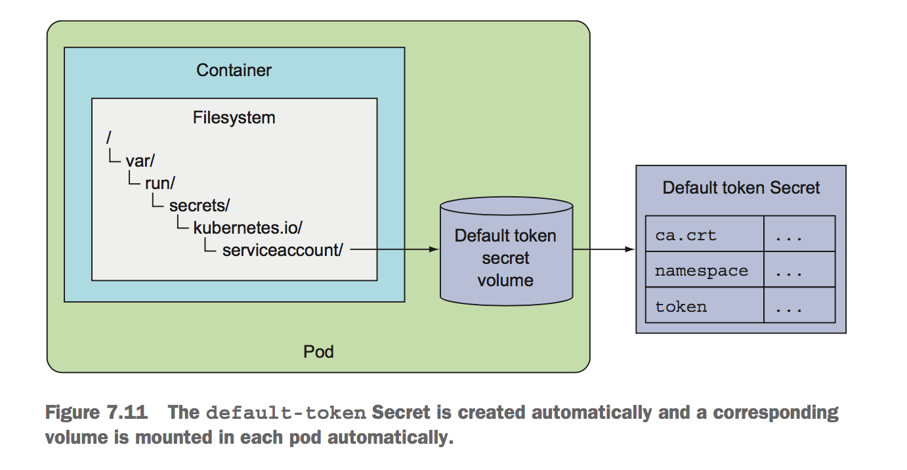

Kubernetes
Table of Contents
- 1. Resources
- 1.1. Pod
- 1.2. ReplicationController
- 1.3. ReplicaSet
- 1.4. DaemonSet
- 1.5. Job
- 1.6. CronJob
- 1.7. Service
- 1.8. Volume
- 1.9. ConfigMap & Secret
- 1.10. Deployment
- 1.11. StatefulSet
- 2. Internals
- 3. YAML
- 4. 核心原理
- 5. Utils
- 5.1. Bash completion
- 5.2. Show all resources
- 5.3. Run Temporary Pod
- 5.4. Discover possible API object fields
- 5.5. Quickly switch to a different namespace
- 5.6. Forwarding a local network port to a port in the pod
- 5.7. Communicating with Pods through API Server
- 5.8. Connecting to Cluster-Internal Services through API Server
- 5.9. Obtaining the application log of a crashed container
- 5.10. Get IPs of all nodes
- 5.11. Talking to API Server
- 5.12. Ways of modifying Deployments and other resources
| Author | Hao Ruan (haoru@cisco.com) |
| Date | 2019-04-06 23:34:04 |
Table of Contents
- 1. Resources
- 1.1. Pod
- 1.2. ReplicationController
- 1.3. ReplicaSet
- 1.4. DaemonSet
- 1.5. Job
- 1.6. CronJob
- 1.7. Service
- 1.8. Volume
- 1.9. ConfigMap & Secret
- 1.10. Deployment
- 1.11. StatefulSet
- 2. Internals
- 3. YAML
- 4. 核心原理
- 5. Utils
- 5.1. Bash completion
- 5.2. Show all resources
- 5.3. Run Temporary Pod
- 5.4. Discover possible API object fields
- 5.5. Quickly switch to a different namespace
- 5.6. Forwarding a local network port to a port in the pod
- 5.7. Communicating with Pods through API Server
- 5.8. Connecting to Cluster-Internal Services through API Server
- 5.9. Obtaining the application log of a crashed container
- 5.10. Get IPs of all nodes
- 5.11. Talking to API Server
- 5.12. Ways of modifying Deployments and other resources
1 Resources
1.1 Pod
1.1.1 YAML Definition
定义文件主要包含：
- API version
- Resource type
- Metadata
Includes the name, namespace, labels, and other information about the pod. - Spec
Contains the actual description of the pod’s contents, such as the pod’s con- tainers, volumes, and other data. - Status
Contains read-only runtime data that shows the state of the resource at a given moment.
When creating a new pod, you never need to provide the status part.

在 POD 定义文件中定义 ports 是可选的行为，端口始终可以被访问，主要是为了方便用户清楚的了解提供了哪些服务。
1.1.2 Label
A label is an arbitrary key-value pair you attach to a resource,
which is then utilized when selecting resources using label selectors
(resources are filtered based on whether they include the label specified in the selector).

A label selector can select resources based on whether the resource:
- Contains (or doesn’t contain) a label with a certain key
- Contains a label with a certain key and value
- Contains a label with a certain key, but with a value not equal to the one you specify
1.1.3 Annotation
Annotations are also key-value pairs, so in essence, they’re similar to labels, but they aren’t meant to hold identifying information.
They can’t be used to group objects the way labels can. While objects can be selected through label selectors, there’s no such thing as an annotation selector.
Annotations can hold much larger pieces of information (up to 256 KB in total) and are primarily meant to be used by tools.
Annotations are also commonly used when introducing new features to Kubernetes. Usually, alpha and beta versions of new features don’t introduce any new fields to API objects. Annotations are used instead of fields, and then once the required API changes have become clear and been agreed upon by the Kubernetes developers, new fields are introduced and the related annotations deprecated. A great use of annotations is adding descriptions for each pod or other API object, so that everyone using the cluster can quickly look up information about each individual object. For example, an annotation used to specify the name of the person who created the object can make collaboration between everyone working on the cluster much easier.
1.1.4 Deleting
By deleting a pod, you’re instructing Kubernetes to terminate all the containers that are part of that pod.
Kubernetes sends a SIGTERM signal to the process and waits a certain number of seconds (30 by default) for it to shut down gracefully.
If it doesn’t shut down in time, the process is then killed through SIGKILL. To make sure your processes are always shut down gracefully, they need to handle the SIGTERM signal properly.
1.1.5 Liveness probes
As soon as a pod is scheduled to a node, the Kubelet on that node will run its containers and, from then on, keep them running as long as the pod exists.
If the container’s main process crashes, the Kubelet will restart the container.
Kubernetes can check if a container is still alive through liveness probes.
You can specify a liveness probe for each container in the pod’s specification. Kubernetes will periodically execute the probe and restart the container if the probe fails.
Kubernetes also supports readiness probes. Be sure not to confuse the two. They’re used for two different things.

Liveness: http-get http://:8080/ delay=0s timeout=1s period=10s #success=1 #failure=3 The delay=0s part shows that the probing begins immediately after the container is started. If you don’t set the initial delay, the prober will start probing the container as soon as it starts, which usually leads to the probe failing, because the app isn’t ready to start receiving requests. The timeout is set to only 1 second, so the container must return a response in 1 second or the probe is counted as failed. The container is probed every 10 seconds (period=10s) and the container is restarted after the probe fails three consecutive times (#failure=3).
1.2 ReplicationController
A ReplicationController’s job is to make sure that an exact number of pods always matches its label selector.
If it doesn’t, the ReplicationController takes the appropriate action to reconcile the actual with the desired number.

1.2.1 Three Parts Of A Replicationcontroller

A ReplicationController’s replica count, the label selector, and even the pod template can all be modified at any time, but only changes to the replica count affect existing pods.
1.2.2 Create

The pod labels in the template must obviously match the label selector of the ReplicationController; otherwise the controller would create new pods indefinitely, because spinning up a new pod wouldn’t bring the actual replica count any closer to the desired number of replicas.
To prevent such scenarios, the API server verifies the ReplicationController definition and will not accept it if it’s misconfigured. Not specifying the selector at all is also an option. In that case, it will be configured automatically from the labels in the pod template.
Don’t specify a pod selector when defining a ReplicationController. Let Kubernetes extract it from the pod template. This will keep your YAML shorter and simpler.
Although a pod isn’t tied to a ReplicationController, the pod does reference it in the metadata.ownerReferences field,
which you can use to easily find which ReplicationController a pod belongs to.
1.2.3 Change Pod Template
A ReplicationController’s pod template can be modified at any time.
Changing the pod template is like replacing a cookie cutter with another one.
It will only affect the cookies you cut out afterward and will have no effect on the ones you’ve already cut.
To modify the old pods, you’d need to delete them and let the ReplicationController replace them with new ones based on the new template.

1.2.4 Deleting a ReplicationController Without Deleting Pods
When you delete a ReplicationController through kubectl delete, the pods are also deleted.
But because pods created by a ReplicationController aren’t an integral part of the ReplicationController, and are only managed by it,
you can delete only the ReplicationController and leave the pods running:
kubectl delete rc <rc-name> --cascade=false
1.3 ReplicaSet
You usually won’t create them directly, but instead have them created automatically when you create the higher-level Deployment resource.
A ReplicaSet behaves exactly like a ReplicationController, but it has more expressive pod selectors.
1.3.1 More Expressive Label Selectors

Each expression must contain a key, an operator, and possibly (depending on the operator) a list of values.
Four valid operators:
- In
- Label’s value must match one of the specified values.
- NotIn
- Label’s value must not match any of the specified values.
- Exists
- Pod must include a label with the specified key (the value isn’t important). When using this operator, you shouldn’t specify the values field.
- DoesNotExist
- Pod must not include a label with the specified key. The values property must not be specified.
1.4 DaemonSet
DaemonSet is used when you want a pod to run on each and every node in the cluster
(and each node needs to run exactly one instance of the pod).

To run a pod on all cluster nodes, you create a DaemonSet object, which is much like a ReplicationController or a ReplicaSet,
except that pods created by a DaemonSet already have a target node specified and skip the Kubernetes Scheduler.
1.5 Job
In the event of a node failure, the pods on that node that are managed by a Job will be rescheduled to other nodes the way ReplicaSet pods are.
In the event of a failure of the process itself (when the process returns an error exit code),
the Job can be configured to either restart the container or not.
1.5.1 Definition

Job pods can't use the default policy, because they're not meant to run indefinitely.
Need to explicitly set the restart policy to either OnFailure or Never.
1.5.2 Limiting the time allowed for a Job pod to complete
A pod's time can be limited by setting the activeDeadlineSeconds property in the pod spec.
If the pod runs longer than that, the system will try to terminate it and will mark the Job as failed.
You can configure how many times a Job can be retried before it is marked as failed by specifying the spec.backoffLimit field in the Job manifest. If you don't explicitly specify it, it defaults to 6.
1.6 CronJob
A CronJob creates Job resources from the jobTemplate property configured in the CronJob spec.
The Job then creates the pods.
1.7 Service
1.7.1 Overall
Although the primary purpose of services is exposing groups of pods to other pods in the cluster,
Both internal (by DNS or ENV) and external (by IP) clients usually connect to pods through services:

Label selectors determine which pods belong to the Service:

1.7.2 Creation
1.7.2.1 By kubectl expose
1.7.2.2 By YAML
1.7.2.2.1 Exposing Multiple Ports In The Same Service
When creating a service with multiple ports, you must specify a name for each port.
apiVersion: v1 kind: Service metadata: name: kubia spec: ports: - name: http port: 80 targetPort: 8080 - name: https port: 443 targetPort: 8443 selector: app: kubia
1.7.2.2.2 Using Named Ports

You can then refer to those ports by name in the service spec:

The biggest benefit of doing so is that it enables you to change port numbers later without having to change the service spec.
1.7.3 Session Affinity
If you want all requests made by a certain client to be redirected to the same pod every time,
you can set the service's sessionAffinity property to ClientIP (instead of None, which is the default).
This makes the service proxy redirect all requests originating from the same client IP to the same pod.
apiVersion: v1 kind: Service spec: sessionAffinity: ClientIP ...
1.7.4 Discovering Service
1.7.4.1 Through ENV
Dashes in the service name are converted to underscores and all letters are uppercased when the service name is used as the prefix in the environment variable's name.
1.7.4.2 Through DNS
kubia .default .svc.cluster.local
------------
service name
---------
namespace
------------------
configurable cluster domain suffix
You can omit the svc.cluster.local suffix and even the namespace, when pods are in the same namespace.
(This is because how /etc/resolv.conf is configured)
Whether a pod uses the internal DNS server or not is configurable through the 'dnsPolicy' property in each pod's spec.
1.7.5 Endpoints
Services don't link to pods directly, but Endpoints.
An Endpoints resource (plural) is a list of IP addresses and ports exposing a service.

Although the pod selector is defined in the service spec, it's not used directly when redirecting incoming connections. Instead, the selector is used to build a list of IPs and ports, which is then stored in the Endpoints resource. If you create a service without a pod selector, Kubernetes won't even create the Endpoints resource (after all, without a selector, it can't know which pods to include in the service). It's up to you to create the Endpoints resource to specify the list of endpoints for the service.
1.7.5.1 Manually configuring service endpoints
To create a service with manually managed endpoints, you need to create both a Service and an Endpoints resource.
Define a service called external-service that will accept incoming connections on port 80 (didn't define a pod selector for the service):

The Endpoints object needs to have the same name as the service and contain the list of target IP addresses and ports for the service:

After both the Service and the Endpoints resource are posted to the server,
the service is ready to be used like any regular service with a pod selector:
If you later decide to migrate the external service to pods running inside Kubernetes,
you can add a selector to the service, thereby making its Endpoints managed automatically.
The same is also true in reverse by removing the selector from a Service, Kubernetes stops updating its Endpoints.
This means a service IP address can remain constant while the actual implementation of the service is changed.
1.7.5.2 Creating an alias for an external service

After the service is created, pods can connect to the external service through the external-service.default.svc.cluster.local domain name.
ExternalName services are implemented solely at the DNS level: a simple CNAME DNS record is created for the service. Therefore, clients connecting to the service will connect to the external service directly, bypassing the service proxy completely. For this reason, these types of services don't even get a cluster IP.
1.7.6 Exposing Services To External Clients
A few ways to make a service accessible externally:
- Setting the service type to NodePort
- Setting the service type to LoadBalancer, an extension of the NodePort type
- Creating an Ingress resource
1.7.6.1 NodePort

An incoming connection to one of those ports will be redirected to a randomly selected pod,
which may or may not be the one running on the node the connection is being made to.
If you only point your clients to the first node, when that node fails, your clients can't access the service anymore. That's why it makes sense to put a load balancer in front of the nodes to make sure you're spreading requests across all healthy nodes and never sending them to a node that's offline at that moment.
1.7.6.1.1 YAML Definition

Specifying the port isn't mandatory; Kubernetes will choose a random port if you omit it.
1.7.6.2 LoadBalancer
Kubernetes clusters running on cloud providers usually support the automatic provision of a load balancer from the cloud infrastructure.
The load balancer will have its own unique, publicly accessible IP address and will redirect all connections to your service.
You can thus access your service through the load balancer's IP address.
If Kubernetes is running in an environment that doesn't support LoadBalancer services,
the load balancer will not be provisioned, but the service will still behave like a NodePort service.
That's because a LoadBalancer service is an extension of a NodePort service.
(LoadBalancer type service is still a NodePort service but with an additional infrastructure-provided load balancer)

1.7.6.2.1 YAML Definition
1.7.6.3 Ingress
One important reason is that each LoadBalancer service requires its own load balancer with its own public IP address,
whereas an Ingress only requires one, even when providing access to dozens of services.
Ingresses operate at the application layer of the network stack (HTTP) and can provide features such as cookie-based session affinity and the like,
which services can’t.

Ingress controller provisions a load balancer behind the scenes.
1.7.6.3.1 YAML Definition


Ingress controller didn’t forward the request to the service. It only used it to select a pod. (Most controllers work like this)
1.7.7 Readiness Probe
Kubernetes invokes the probe periodically and acts based on the result of the readiness probe.
If a pod reports that it’s not ready, it’s removed from the service. If the pod then becomes ready again, it’s re-added.
Unlike liveness probes, if a container fails the readiness check, it won’t be killed or restarted.
The effect is the same as when the pod doesn’t match the service’s label selector at all:

1.7.8 Headless
Kubernetes allows clients to discover pod IPs through DNS lookups.
Usually, when you perform a DNS lookup for a service, the DNS server returns a single IP (the service’s cluster IP).
By setting the clusterIP field to None in the service specification, the DNS server will return the pod IPs instead of the single service IP.
Instead of returning a single DNS A record, the DNS server will return multiple A records for the service,
each pointing to the IP of an individual pod backing the service at that moment.
A headless services still provides load balancing across pods, but through the DNS round-robin mechanism instead of through the service proxy.
1.7.9 External Traffic Issue
When an external client connects to a service through the node port (this also includes cases when it goes through the load balancer first),
the randomly chosen pod may or may not be running on the same node that received the connection.
An additional network hop is required to reach the pod, but this may not always be desirable.
You can prevent this additional hop by configuring the service to redirect external traffic only to pods running on the node that received the connection.
This is done by setting the externalTrafficPolicy field in the service's spec section:
spec: externalTrafficPolicy: Local ...
f a service definition includes this setting and an external connection is opened through the service's node port,
the service proxy will choose a locally running pod. If no local pods exist, the connection will hang.
You therefore need to ensure the load balancer forwards connections only to nodes that have at least one such pod.
1.7.9.1 Non-Preservation Of The Client's IP Issue
Usually, when clients inside the cluster connect to a service, the pods backing the service can obtain the client's IP address.
But when the connection is received through a node port, the packets' source IP is changed, because SNAT is performed on the packets.
The Local external traffic policy (externalTrafficPolicy: Local) described in the previous section affects the preservation of the client's IP,
because there's no additional hop between the node receiving the connection and the node hosting the target pod (SNAT isn't performed).
1.8 Volume
Volumes aren't top-level resources like pods, but are instead defined as a part of a pod and share the same lifecycle as the pod.
This means a volume is created when the pod is started and is destroyed when the pod is deleted.
Kubernetes volumes are a component of a pod and are thus defined in the pod's specification-much like containers. They aren't a standalone Kubernetes object and can not be created or deleted on their own.

1.8.1 Volume Types
- emptyDir
- A simple empty directory used for storing transient data.
- hostPath
- Used for mounting directories from the worker node's filesystem into the pod.
- gitRepo
- A volume initialized by checking out the contents of a Git repository.
- nfs
- An NFS share mounted into the pod.
- gcePersistentDisk, awsElasticBlockStore, azureDisk
- Cloud provider.
- cinder, cephfs, iscsi, flocker, glusterfs, quobyte, rbd, flexVolume, vsphere- Volume, photonPersistentDisk, scaleIO
- Network storage.
- configMap, secret, downwardAPI
- persistentVolumeClaim
1.8.2 emptyDir
An emptyDir volume is especially useful for sharing files between containers running in the same pod.
An emptyDir volume is the simplest type of volume, but other types build upon it. (After the empty directory is created, they then populate it with data)

1.8.2.1 The medium used
The emptyDir used as the volume was created on the actual disk of the worker node hosting the pod.
Kubernetes can create the emptyDir on a tmpfs filesystem (in memory instead of on disk).
To do this, set the emptyDir's medium to Memory:
volumes: - name: html emptyDir: medium: Memory
1.8.3 hostPath
It’s not a good idea to use a hostPath volume for regular pods, because it makes the pod sensitive to what node it’s scheduled to.
Remember to use hostPath volumes only if you need to read or write system files on the node. Never use them to persist data across pods.
1.8.4 PV/PVC

Instead of the developer adding a technology-specific volume to their pod, it’s the cluster administrator who sets up the underlying storage and then
registers it in Kubernetes by creating a PersistentVolume resource through the Kubernetes API server.
When a cluster user needs to use persistent storage in one of their pods, they first create a PersistentVolumeClaim manifest,
specifying the minimum size and the access mode they require.
The user then submits the PersistentVolumeClaim manifest to the Kubernetes API server,
and Kubernetes finds the appropriate PersistentVolume and binds the volume to the claim.
The PersistentVolumeClaim can then be used as one of the volumes inside a pod.
Other users cannot use the same PersistentVolume until it has been released by deleting the bound PersistentVolumeClaim.
1.8.4.1 Creating PersistentVolume
apiVersion: v1 kind: PersistentVolume metadata: name: mongodb-pv spec: capacity: storage: 1Gi # Defining the PersistentVolume's size accessModes: # Cwhether it can be read from and/or written to by a single node or by multiple nodes at the same time. - ReadWriteOnce - ReadOnlyMany persistentVolumeReclaimPolicy: Retain # After the claim is released, the PersistentVolume should be retained (not erased or deleted). # Have to manually delete pv when it is no more needed. (no deleted when pvc is deleted) hostPath: path: /tmp/mongodb
PersistentVolumes don’t belong to any namespace. They’re cluster-level resources like nodes.
(注: spec.capacity.storage 看起来只是用于匹配 PVC ，实际容量应以 Actual storage 为准)

1.8.4.1.1 Access Mode
- ReadWriteOnce
- Only a single node can mount the volume for reading and writing.
- ReadOnlyMany
- Multiple nodes can mount the volume for reading.
- ReadWriteMany
- Multiple nodes can mount the volume for both reading and writing.
RWO, ROX, and RWX pertain to the number of worker nodes that can use the volume at the same time, not to the number of pods!
1.8.4.2 Creating PersistentVolumeClaim
apiVersion: v1 kind: PersistentVolumeClaim metadata: name: mongodb-pvc spec: resources: requests: storage: 1Gi accessModes: - ReadWriteOnce storageClassName: "" # Specifying an empty string as the storage class name ensures the PVC binds to a pre-provisioned PV instead of dynamically provisioning a new one.
As soon as you create the claim, Kubernetes finds the appropriate PersistentVolume and binds it to the claim.
The PersistentVolume’s capacity must be large enough to accommodate what the claim requests.
Additionally, the volume’s access modes must include the access modes requested by the claim.
1.8.4.3 Using PersistentVolumeClaim in Pod
apiVersion: v1 kind: Pod metadata: name: mongodb spec: containers: - image: mongo name: mongodb volumeMounts: - name: mongodb-data mountPath: /data/db ports: - containerPort: 27017 protocol: TCP volumes: - name: mongodb-data persistentVolumeClaim: claimName: mongodb-pvc # referenced by name

1.8.4.4 Dynamic Provisioning of PV
Cluster administrator can define StorageClass and let the system create a new PersistentVolume each time one is requested through a PersistentVolumeClaim.
Similar to PersistentVolumes, StorageClass resources aren’t namespaced.

1.8.4.4.1 Defining StorageClass
apiVersion: storage.k8s.io/v1 kind: StorageClass metadata: name: fast provisioner: k8s.io/minikube-hostpath # The volume plugin to use for provisioning the PersistentVolume parameters: # Parameterd passed to the provisioner type: pd-ssd
1.8.4.4.2 Requesting the SC in a PVC
apiVersion: v1 kind: PersistentVolumeClaim metadata: name: mongodb-pvc spec: storageClassName: fast resources: requests: storage: 100Mi accessModes: - ReadWriteOnce
The provisioner is used even if an existing manually provisioned PersistentVolume matches the PersistentVolumeClaim.
1.8.4.4.3 Creating a PVC Without SC
apiVersion: v1 kind: PersistentVolumeClaim metadata: name: mongodb-pvc2 spec: resources: requests: storage: 100Mi accessModes: - ReadWriteOnce
The default storage class is what's used to dynamically provision a PersistentVolume if the PersistentVolumeClaim doesn't explicitly say which storage class to use.
1.8.4.4.4 Forcing a PVC to Be Bound to One of The Pre-Provisioned PVs
Explicitly set storageClassName to "" if you want the PVC to use a pre-provisioned PersistentVolume.
1.9 ConfigMap & Secret
1.9.1 Basic
1.9.1.1 Overriding the command and arguments
In Kubernetes, when specifying a container, you can choose to override both ENTRYPOINT and CMD.

In most cases, you’ll only set custom arguments and rarely override the command
(except in general-purpose images such as busybox, which doesn’t define an ENTRYPOINT at all).
The command and args fields can’t be updated after the pod is created.
1.9.1.2 Specifing env variables
kind: Pod spec: containers: - image: luksa/fortune:env env: # Adding a single variable to the environment variable list - name: INTERVAL value: "30" name: html-generator
env: - name: FIRST_VAR value: "foo" - name: SECOND_VAR value: "$(FIRST_VAR)bar" # Referring to other environment variables
1.9.2 ConfigMap

1.9.2.1 Creating
1.9.2.1.1 CLI
kubectl create configmap my-config \ --from-file=foo.json \ # A single file --from-file=bar=foobar.conf \ # A file stored under a custom key --from-file=config-opts/ \ A whole directory --from-literal=some=thing # A literal value
1.9.2.1.2 YAML
apiVersion: v1 kind: ConfigMap metadata: name: fortune-config data: sleep-interval: "25"
1.9.2.2 Passing CM to Container
1.9.2.2.1 As ENV

Passing all entries of a ConfigMap as environment variables at once
spec: containers: - image: some-image envFrom: # Using envFrom instead of env - prefix: CONFIG_ # All environment variables will be prefixed with CONFIG_. configMapRef: name: my-config-map # Referencing the ConfigMap called my-config-map
The prefix is optional, so if you omit it the environment variables will have the same name as the keys.
Passing a ConfigMap entry as a command-line argument
You can’t reference ConfigMap entries directly in the
pod.spec.containers.argsfield, but you can first initialize an environment variable from the ConfigMap entry and then refer to the variable inside the arguments:
1.9.2.2.2 As Volume
A configMap volume will expose each entry of the ConfigMap as a file.
The process running in the container can obtain the entry’s value by reading the contents of the file.

Exposing Certain ConfigMap Entries in the Volume

Mounting Individual ConfigMap Entries as Files without Hiding Other Files in the Directory

The 'subPath' property can be used when mounting any kind of volume. Instead of mounting the whole volume, you can mount part of it.
Setting the File Permissions for Files in a ConfigMap Volume
volumes: - name: config configMap: name: fortune-config defaultMode: "6600" # This sets the permissions for all files to -rw-rw------
1.9.3 Secret
Kubernetes helps keep your Secrets safe by making sure each Secret is only distributed to the nodes that run the pods that need access to the Secret.
Also, on the nodes themselves, Secrets are always stored in memory and never written to physical storage.
The maximum size of a Secret is limited to 1MB.
1.9.3.1 Default Token Secret
Every pod has a secret volume attached to it automatically, which represent everything you need to securely talk to the Kubernetes API server from within your pods, should you need to do that.
By default, the default-token Secret is mounted into every container, but you can disable that in each pod by setting the automountServiceAccountToken field in the pod spec to false or by setting it to false on the service account the pod is using.

1.9.3.2 Image Pull Secret
kubectl create secret docker-registry mydockerhubsecret \ --docker-username=myusername --docker-password=mypassword \ --docker-email=my.email@provider.com
apiVersion: v1 kind: Pod metadata: name: private-pod spec: imagePullSecrets: #| This enables pulling images - name: mydockerhubsecret #| from a private image registry. containers: - image: username/private:tag name: main
1.9.3.3 Passing Secret to Container
1.9.3.3.1 As Volume
apiVersion: v1 kind: Pod metadata: name: fortune-https spec: containers: - image: luksa/fortune:env name: html-generator env: - name: INTERVAL valueFrom: configMapKeyRef: name: fortune-config key: sleep-interval volumeMounts: - name: html mountPath: /var/htdocs - image: nginx:alpine name: web-server volumeMounts: - name: html mountPath: /usr/share/nginx/html readOnly: true - name: config mountPath: /etc/nginx/conf.d readOnly: true - name: certs # | Configured Nginx to read the cert and mountPath: /etc/nginx/certs/ # | key file from /etc/nginx/certs, so you readOnly: true # | need to mount the Secret volume there. ports: - containerPort: 80 - containerPort: 443 volumes: - name: html emptyDir: {} - name: config configMap: name: fortune-config items: - key: my-nginx-config.conf path: https.conf - name: certs # | Define the secret secret: # | volume here, referring to secretName: fortune-https # | the fortune-https Secret.

1.9.3.3.2 As ENV
env: - name: FOO_SECRET valueFrom: #| The variable should be set secretKeyRef: #| from the entry of a Secret. name: fortune-https # The name of the Secret holding the key key: foo # The key of the Secret to exopse
Think twice before using environment variables to pass your Secrets to your container, because they may get exposed inadvertently. To be safe, always use secret volumes for exposing Secrets.
1.10 Deployment
Deployment sits on top of ReplicaSets and enables declarative application updates.
The ReplicaSet(created by Deployment)'s name also contains the hash value of its pod template.

1.10.1 Updating Strategies
You have two ways of updating all those pods. You can do one of the following:
Delete all existing pods first and then start the new ones (Recreate)
Start new ones and, once they're up, delete the old ones
You can do this either by adding all the new pods and then deleting all the old ones at once, or sequentially, by adding new pods and removing old ones gradually.
Spinning up new pods and then deleting the old ones (blue-green deployment)

RollingUpdate
Should use this strategy only when your app can handle running both the old and new version at the same time.

1.10.2 Performing RU with kubectl
kubectl rolling-update kubia-v1 kubia-v2 --image=luksa/kubia:v2 # ===old rc=== ===new rc===
1.10.2.1 Steps Required Before RU
- Copying old controller to new controller and changing the image in its pod template.
- Add an additional
deploymentlabel in both origin and new contoller. - Modify the labels of the live pods.

After setting up all this, kubectl starts replacing pods by first scaling up the new controller to 1. The controller thus creates the first v2 pod. kubectl then scales down the old ReplicationController by 1.

1.10.3 Creating Deployment
apiVersion: apps/v1beta1 # Deployments are in the apps API group, version v1beta1. kind: Deployment metadata: name: kubia # There's no need to include the version info in the name of the Deployment. spec: replicas: 3 template: metadata: name: kubia labels: app: kubia spec: containers: - image: luksa/kubia:v1 name: nodejs
kubectl create -f kubia-deployment-v1.yaml --record
Be sure to include the --record command-line option when creating it. This records the command in the revision history.
1.10.4 Updating Deployment
The only thing you need to do is modify the pod template defined in the Deployment resource and Kubernetes will take all the steps necessary to get the actual system state to what's defined in the resource.

1.10.5 Rolling Back
Deployments make it easy to roll back to the previously deployed version by telling Kubernetes to undo the last rollout of a Deployment:
$ kubectl rollout undo deployment kubia
deployment "kubia" rolled back
The undo command can also be used while the rollout process is still in progress to essentially abort the rollout. Pods already created during the roll- out process are removed and replaced with the old ones again.
The length of the revision history is limited by the revisionHistoryLimit property on the Deployment resource.
1.10.6 maxSurge/maxUnavailable
spec: strategy: rollingUpdate: maxSurge: 1 maxUnavailable: 0 type: RollingUpdate
maxSurge
Determines how many pod instances you allow to exist above the desired replica count configured on the Deployment.
It defaults to 25%, so there can be at most 25% more pod instances than the desired count.
The value can also be an absolute value.maxUnavailable
Determines how many pod instances can be unavailable relative to the desired replica count during the update.
It also defaults to 25%, so the number of available pod instances must never fall below 75% of the desired replica count.
Can also specify an absolute value instead of a percentage.

1.10.7 Pausing Rollout Process
A Deployment can also be paused during the rollout process.
This allows you to verify that everything is fine with the new version before proceeding with the rest of the rollout.
$ kubectl set image deployment kubia nodejs=luksa/kubia:v4 deployment "kubia" image updated $ kubectl rollout pause deployment kubia deployment "kubia" paused # A single new pod should have been created, but all original pods should also still be running. # Once the new pod is up, a part of all requests to the service will be redirected to the new pod. # Once you're confident the new version works as it should, you can resume the deployment to replace all the old pods with new ones: $ kubectl rollout resume deployment kubia deployment "kubia" resumed
If a Deployment is paused, the 'undo' command won't undo it until you resume the Deployment.
1.10.8 Blocking Rollout (minReadySeconds)
minReadySeconds can be used to slow down the rollout, so you could see it was indeed performing a rolling update and not replacing all the pods at once.
But the main function of minReadySeconds is to prevent deploying malfunctioning versions, not slowing down a deployment for fun.
- This property specifies how long a newly created pod should be ready before the pod is treated as available.
- Until the pod is available, the rollout process will not continue.
- If a new pod's readiness probe starts failing before minReadySeconds have passed, the rollout of the new version will effectively be blocked.
With a properly configured readiness probe and a proper minReadySeconds setting, Kubernetes would have prevented us from deploying buggy version at an earlier stage. If only define the readiness probe without setting 'minReadySeconds' properly, new pods are considered available immediately when the first invocation of the readiness probe succeeds. If the readiness probe starts failing shortly after, the bad version is rolled out across all pods. Therefore, you should set 'minReadySeconds' appropriately.
When the rollout will never continue, the only thing to do now is abort the rollout by undoing it:
$ kubectl rollout undo deployment kubia
deployment "kubia" rolled back
1.11 StatefulSet
StatefulSet makes sure pods are rescheduled in such a way that they retain their identity and state.
StatefulSets were more like ReplicaSets and not like Deployments, so they don't perform a rollout when the template is modified.
Starting from Kubernetes version 1.7, StatefulSets support rolling updates the same way Deployments and DaemonSets do. See the StatefulSet's spec.updateStrategy field documentation using kubectl explain for more information.
1.11.1 设计思想
1.11.1.1 Stable Identity
Each pod created by a StatefulSet is assigned an ordinal index (zero-based),
which is then used to derive the pod's name and hostname, and to attach stable storage to the pod.
The names of the pods are thus predictable.

1.11.1.1.1 Governing Service
StatefulSet requires to create a corresponding governing headless Service that's used to provide the actual network identity to each pod.
Through this Service, each pod gets its own DNS entry, so its peers and possibly other clients in the cluster can address the pod by its hostname:
a-0 .foo .default .svc.cluster.local -------- ------------ --------- ---------------------------------- pod name service name namespace configurable cluster domain suffix
Additionally, we can also use DNS to look up all the StatefulSet's pods' names by looking up SRV records for the foo.default.svc.cluster.local domain.
SRV records are used to point to hostnames and ports of servers providing a specific service. Kubernetes creates SRV records to point to the hostnames of the pods backing a HEADLESS SERVICE.
1.11.1.1.2 Scaling
- Scaling the StatefulSet creates a new pod instance with the next unused ordinal index.
- Scaling down a StatefulSet always removes the instances with the highest ordinal index first.
ONLY ONE POD INSTANCE AT A TIME WHEN SCALING DOWN/UP: Because some stateful applications don't handle rapid scale-downs nicely, StatefulSets scale down ONLY ONE POD INSTANCE AT A TIME (for example: distributed data store may lose data if multiple nodes go down at the same time). For this exact reason, StatefulSets also never permit scale-down operations IF ANY OF THE INSTANCES ARE UNHEALTHY. If an instance is unhealthy, and you scale down by one at the same time, you've effectively lost two cluster members at once.
1.11.1.2 Stable Dedicated Storage
Each stateful pod instance needs to use its own storage, if a stateful pod is rescheduled the new instance must have the same storage attached to it.
StatefulSet uses volume claim templates to stamp out PersistentVolumeClaims along with each pod instance:

PersistentVolumeClaim remains after a scale-down:
1.11.1.3 Guarantees
A StatefulSet must guarantee at-most-one semantics for stateful pod instances.
This means a StatefulSet must be absolutely certain that a pod is no longer running before it can create a replacement pod.
Kubernetes master can only know that when the cluster administrator tells it so.
To do that, the admin needs to either delete the pod forcibly or delete the whole node.
UNDERSTANDING WHAT HAPPENS TO PODS WHOSE STATUS IS UNKNOWN If the pod's status remains UNKNOWN for more than a few minutes (this time is configurable), the pod is marked for deletion, and will be removed as soon as the Kubelet notifies the API server that the pod's containers have terminated. The only thing you can do is tell the API server to delete the pod without waiting for the Kubelet to confirm that the pod is no longer running: kubectl delete po <name> --force --grace-period 0
1.11.2 Deploying App through StatefulSet
To deploy app, you'll need to create two (or three) different types of objects:
PersistentVolumes for storing your data files
Need to create these only if the cluster doesn't support dynamic provisioning of PersistentVolumes.
- A governing Service required by the StatefulSet.
- The StatefulSet itself.
2 Internals
2.1 Container Vs VM

2.2 K8S components

3 YAML
3.1 Key Value Pair
fruit: apple vegetable: carrot liquid: water meat: chicken
3.2 Array / List
fruits: - orange - apple - banana vegetables: - carrot - cauliflower - tomato
3.3 Dictionary / Map
banana: calories: 105 fat: 0.4 carbs: 27 grape: calories: 62 fat: 0.3 carbs: 16
4 核心原理
4.1 资源对象
4.1.1 POD
4.1.1.1 基本 YAML 定义
apiVersion, kind, metadata, spec 是必填项
apiVersion: v1 kind: Pod metadata: name: nginx labels: app: nginx spec: containers: - name: nginx image: nginx ports: - containerPort: 80
kubectl get pods kubectl describe pod <pod_name>
4.1.1.2 设计理念
Pod 是在 K8s 集群中运行部署应用或服务的最小单元，它是可以支持多容器的。
Pod 的设计理念是支持多个容器在一个 Pod 中共享网络地址和文件系统，可以通过进程间通信和文件共享这种简单高效的方式组合完成服务。
Pod 是 K8s 集群中所有业务类型的基础，不同类型的业务就需要不同类型的 控制器 去执行。
目前 K8s 中的业务主要可以分为：
- 长期伺服型 (long-running)
- 批处理型 (batch)
- 节点后台支撑型 (node-daemon)
- 有状态应用型 (stateful application)
分别对应的控制器类型为：
- Deployment
- Job
- DaemonSet
- StatefulSet
直接创建的 Pod 一旦被调度后就跟 Node 绑定，即使 Node 挂掉也不会被重新调度（ 而是被自动删除 ），因此推荐使用 Deployment、Daemonset 等控制器来容错。
4.1.1.3 生命周期
- Pending
- Pod 已经在 apiserver 中创建，但还没有调度到 Node 上面
- Running
- Pod 已经调度到 Node 上面，所有容器都已经创建，并且至少有一个容器还在运行或者正在启动
- Succeeded
- Pod 调度到 Node 上面后成功运行结束，并且不会重启
- Failed
- Pod 调度到 Node 上面后至少有一个容器运行失败（即退出码不为 0 或者被系统终止）
- Unknonwn
- 状态未知，通常是由于 apiserver 无法与 kubelet 通信导致
4.1.1.4 重启策略(restartPolicy)
PodSpec 中的 restartPolicy 可以用来设置是否对退出的 Pod 重启，可选项包括:
- Always
- 只要退出就重启
- OnFailure
- 失败退出（exit code 不等于 0）时重启
- Never
- 只要退出就不再重启
注意，这里的重启是指在 Pod 所在 Node 上面本地重启，并不会调度到其他 Node 上去。
- 单容器的 Pod ，容器成功退出时，不同 restartPolicy 时的动作为
- Always: 重启 Container; Pod phase 保持 Running.
- OnFailure: Pod phase 变成 Succeeded.
- Never: Pod phase 变成 Succeeded.
- 单容器的 Pod ，容器失败退出时，不同 restartPolicy 时的动作为
- Always: 重启 Container; Pod phase 保持 Running.
- OnFailure: 重启 Container; Pod phase 保持 Running.
- Never: Pod phase 变成 Failed.
- 2 个容器的 Pod，其中一个容器在运行而另一个失败退出时，不同 restartPolicy 时的动作为
- Always: 重启 Container; Pod phase 保持 Running.
- OnFailure: 重启 Container; Pod phase 保持 Running.
- Never: 不重启 Container; Pod phase 保持 Running.
- 2 个容器的 Pod，其中一个容器停止而另一个失败退出时，不同 restartPolicy 时的动作为
- Always: 重启 Container; Pod phase 保持 Running.
- OnFailure: 重启 Container; Pod phase 保持 Running.
- Never: Pod phase 变成 Failed.
- 单容器的 Pod，容器内存不足（OOM），不同 restartPolicy 时的动作为
- Always: 重启 Container; Pod phase 保持 Running.
- OnFailure: 重启 Container; Pod phase 保持 Running.
- Never: 记录失败事件; Pod phase 变成 Failed.
其他情况的处理逻辑：
- Pod 还在运行，但磁盘不可访问时
- 终止所有容器
- Pod phase 变成 Failed
- 如果 Pod 是由某个控制器管理的，则重新创建一个 Pod 并调度到其他 Node 运行
- Pod 还在运行，但由于网络分区故障导致 Node 无法访问
- Node controller等待 Node 事件超时
- Node controller 将 Pod phase 设置为 Failed.
- 如果 Pod 是由某个控制器管理的，则重新创建一个 Pod 并调度到其他 Node 运行
4.1.1.5 使用 Volume
apiVersion: v1 kind: Pod metadata: name: redis spec: containers: - name: redis image: redis volumeMounts: - name: redis-storage mountPath: /data/redis volumes: - name: redis-storage emptyDir: {}
4.1.1.6 环境变量
Pod 的名字、命名空间、IP 以及容器的计算资源限制等可以通过 Downward API 的方式获取并存储到环境变量中。
4.1.1.7 镜像拉取策略(ImagePullPolicy)
支持三种 ImagePullPolicy:
- Always
- 不管镜像是否存在都会进行一次拉取
- Never
- 不管镜像是否存在都不会进行拉取
- IfNotPresent
- 只有镜像不存在时，才会进行镜像拉取
注意：
默认为 IfNotPresent ，但 :latest 标签的镜像默认为 Always 。
拉取镜像时 docker 会进行校验，如果镜像中的 MD5 码没有变，则不会拉取镜像数据。
生产环境中应该尽量避免使用 :latest 标签，而开发环境中可以借助 :latest 标签自动拉取最新的镜像。
4.1.1.8 DNS 策略
通过设置 dnsPolicy 参数，设置 Pod 中容器访问 DNS 的策略：
- ClusterFirst
- 优先基于 cluster domain （如 default.svc.cluster.local） 后缀，通过 kube-dns 查询 (默认策略)
- Default
- 优先从 Node 中配置的 DNS 查询
4.1.1.9 Health Probe
为了确保容器在部署后确实处在正常运行状态，Kubernetes 提供了两种探针（Probe）来探测容器的状态：
- LivenessProbe
- 探测应用是否处于健康状态，如果不健康则删除并重新创建容器
- ReadinessProbe
- 探测应用是否启动完成并且处于正常服务状态，如果不正常则不会接收来自 Kubernetes Service 的流量
Kubernetes 支持三种方式来执行探针：
- exec
- 在容器中执行一个命令，如果 命令退出码 返回 0 则表示探测成功，否则表示失败
- tcpSocket
- 对指定的容器 IP 及端口执行一个 TCP 检查，如果端口是开放的则表示探测成功，否则表示失败
- httpGet
- 对指定的容器 IP、端口及路径执行一个 HTTP Get 请求，如果返回的 状态码 在 [200,400) 之间则表示探测成功，否则表示失败
apiVersion: v1 kind: Pod metadata: labels: app: nginx name: nginx spec: containers: - image: nginx imagePullPolicy: Always name: http livenessProbe: httpGet: path: / port: 80 httpHeaders: - name: X-Custom-Header value: Awesome initialDelaySeconds: 15 timeoutSeconds: 1 readinessProbe: exec: command: - cat - /usr/share/nginx/html/index.html initialDelaySeconds: 5 timeoutSeconds: 1 - name: goproxy image: gcr.io/google_containers/goproxy:0.1 ports: - containerPort: 8080 readinessProbe: tcpSocket: port: 8080 initialDelaySeconds: 5 periodSeconds: 10 livenessProbe: tcpSocket: port: 8080 initialDelaySeconds: 15 periodSeconds: 20
4.1.1.10 调度到指定 Node 上
可以通过 nodeSelector, nodeAffinity, podAffinity 以及 Taints 和 tolerations 等来将 Pod 调度到需要的 Node 上。
apiVersion: v1
kind: Pod
metadata:
name: nginx
labels:
env: test
spec:
containers:
- name: nginx
image: nginx
imagePullPolicy: IfNotPresent
nodeSelector:
<label>: <value>
4.1.1.11 常用命令
4.1.1.11.1 查看 Pod 状态
kubectl get pod <pod_name> -o jsonpath"{.status.phase}"=
4.1.2 Replica Set
ReplicaSet 跟 ReplicationController 没有本质的不同，只是名字不一样， 并且 ReplicaSet 支持集合式的 selector（ReplicationController 仅支持等式）。
Deployment 使用了 Replica Set ，是更高一层的概念。 除非需要自定义升级功能或根本不需要升级 Pod ，一般情况下，推荐使用 Deployment 而不直接使用 Replica Set 。 这样就无需担心跟其他机制的不兼容问题（比如 ReplicaSet 不支持 rolling-update 但 Deployment 支持）， 并且还支持版本记录、回滚、暂停升级等高级特性。
4.1.2.1 YAML 定义
spec.template 可以从 Pod 定义文件中复制过来：

4.1.2.2 常用命令
kubectl replace -f rs-def.yml kubectl scale --replicas=6 -f rs-def.yml kubectl scale --replicas=6 replicaset <name>
5 Utils
5.1 Bash completion
source <(kubectl completion bash | sed s/kubectl/<your_alias>/g)
5.2 Show all resources
kubectl get
5.3 Run Temporary Pod
kubectl run -it srvlookup --image=tutum/dnsutils --rm --restart=Never -- dig SRV kubia.default.svc.cluster.local
The command runs a one-off pod (–restart=Never) called srvlookup, which is attached to the console (-it) and is deleted as soon as it terminates (–rm).
5.4 Discover possible API object fields
kubectl explain pods
You can then drill deeper to find out more about each attribute.
kubectl explain pod.spec
5.5 Quickly switch to a different namespace
alias kcd='kubectl config set-context $(kubectl config current- context) --namespace '
You can then switch between namespaces using kcd <some-namespace>
5.6 Forwarding a local network port to a port in the pod
Using port forwarding like this is an effective way to test an individual pod.
kubectl port-forward <pod-name> <local-port>:<pod-port>
5.7 Communicating with Pods through API Server
One useful feature of the API server is the ability to proxy connections directly to individual pods.
If you want to perform requests against your kubia-0 pod, you hit the following URL:
<apiServerHost>:<port>/api/v1/namespaces/default/pods/kubia-0/proxy/<path>
5.8 Connecting to Cluster-Internal Services through API Server
Instead of using a piggyback pod to access the service from inside the cluster,
you can use the same proxy feature provided by the API server to access the service:
/api/v1/namespaces/<namespace>/services/<service name>/proxy/<path>
5.9 Obtaining the application log of a crashed container
You can print the application’s log with kubectl logs. If your container is restarted, the kubectl logs command will show the log of the current container.
When you want to figure out why the previous container terminated, you’ll want to see those logs instead of the current container’s logs.
This can be done by using the --previous option:
kubectl logs <pod> --previous
5.10 Get IPs of all nodes
kubectl get nodes -o jsonpath='{.items[*].status.addresses[?(@.type=="ExternalIP")].address}'
To learn more about how to use JSONPath with kubectl, refer to the [To learn more about how to use JSONPath with kubectl, refer to the documentation.
5.11 Talking to API Server
5.11.1 kubectl proxy
kubectl proxy --port 8081
curl http://localhost:8081
5.11.2 From in POD
export CURL_CA_BUNDLE=/var/run/secrets/kubernetes.io/serviceaccount/ca.crt TOKEN=$(cat /var/run/secrets/kubernetes.io/serviceaccount/token) NS=$(cat /var/run/secrets/kubernetes.io/serviceaccount/namespace) curl -H "Authorization: Bearer $TOKEN" https://kubernetes # Listing pods in the pod's own namespace curl -H "Authorization: Bearer $TOKEN" https://kubernetes/api/v1/namespaces/$NS/pods
Using Ambassador Container

5.12 Ways of modifying Deployments and other resources
5.12.1 edit
Opens the object's manifest in your default editor.
After making changes, saving the file, and exiting the editor, the object is updated.
Example: kubectl edit deployment kubia
5.12.2 patch
Modifies individual properties of an object.
Example:
kubectl patch deployment kubia -p '{"spec": {"template": {"spec": {"containers": [{"name": "nodejs", "image": "luksa/kubia:v2"}]}}}}'
5.12.3 apply
Modifies the object by applying property values from a full YAML or JSON file.
If the object specified in the YAML/JSON doesn't exist yet, it's created.
The file needs to contain the full definition of the resource
(it can't include only the fields you want to update, as is the case with kubectl patch).
Example: kubectl apply -f kubia-deployment-v2.yaml
5.12.4 replace
Replaces the object with a new one from a YAML/JSON file.
In contrast to the apply command, this command requires the object to exist; otherwise it prints an error.
Example: kubectl replace -f kubia-deployment-v2.yaml
5.12.5 set image
Changes the container image defined in a Pod, ReplicationController's template, Deployment, DaemonSet, Job, or ReplicaSet.
Example: kubectl set image deployment kubia nodejs=luksa/kubia:v2